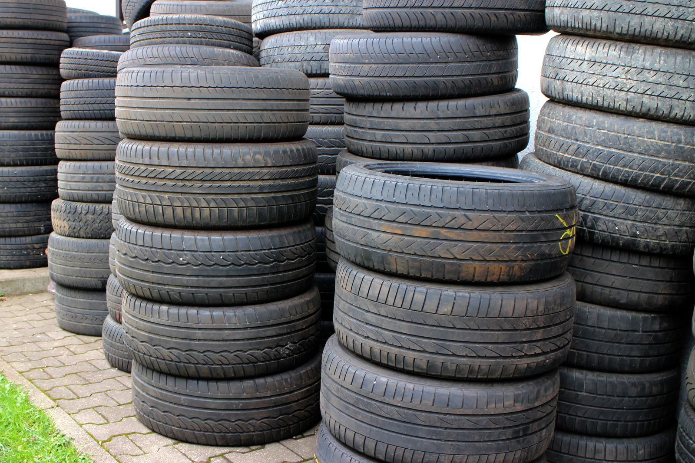

Serviteca · Loncoche
¿Se repara
o no se repara?
Con el neumático en la mano, esa es la única pregunta. Acá está la respuesta escrita, caso por caso, antes de que le vendan uno nuevo.
Cuatro casos
Parche, bacheo
o neumático nuevo
La diferencia no es el tamaño del daño: es dónde está. Un neumático se repara en la banda de rodadura y no se repara en el flanco, y eso no lo decide el precio.
Pinchazo en la banda, chico Se repara
Es el caso normal: un clavo o un tornillo en la zona que pisa el suelo, y de un diámetro chico. Se desmonta, se limpia por dentro y se repara desde adentro hacia afuera, no con un tapón puesto por fuera a la rápida.
La reparación por dentro sella el aire y además tapa el paso de humedad al alambre. La de afuera aguanta unos días y vuelve a filtrar.
Corte o burbuja en el flanco No se repara
El flanco es la pared lateral y es la parte que se dobla con cada vuelta. Ahí no hay estructura para sostener un parche: cualquier reparación se despega andando, y si revienta, revienta a velocidad.
La burbuja o «huevo» es peor todavía: significa que el alambre de adentro ya está cortado, aunque por fuera no se vea nada roto.
Clavo puesto, sin pérdida de aire Se revisa igual
El clavo que quedó clavado y no baja el aire hay que sacarlo y reparar igual: mientras está puesto, va rozando la estructura interna en cada vuelta y entra humedad por el borde.
Lo que no hay que hacer es sacarlo uno mismo en la casa y seguir andando: ahí sí queda el agujero abierto.
Dibujo gastado o gomas viejas Toca cambiar
Cuando el dibujo llegó al testigo de desgaste —esos resaltes que trae el propio neumático entre las ranuras— ya no frena en mojado, aunque se vea entero.
La goma también envejece parada: se pone dura y se agrieta con los años, aunque el auto no ande. Un neumático viejo con dibujo puede ser tan peligroso como uno gastado.
Criterios generales del oficio. La decisión final se toma con el neumático desmontado y a la vista.

El patio de una serviteca
Se guarda el usado hasta ver si sirve
Una tienda de neumáticos vende y se acabó. Una serviteca mira el que trae puesto, decide si aguanta una temporada más y lo guarda si sirve de repuesto. Ese patio de neumáticos usados —que en la foto de arriba es el galpón real de ellos— es la diferencia entre las dos cosas, y es lo que esta página escribe caso por caso antes de que nadie venda nada.
Antes de tomar la ruta
La presión
del viaje
Loncoche es cruce: el que sale a la costa o toma la Cinco pasa por acá. Y casi nadie mira la presión antes de cargar el auto con la familia, las maletas y la carpa.
- La presión correcta está en el auto, no en el neumático
- Va en una etiqueta en el marco de la puerta del conductor o en el manual. El número que trae grabado el neumático es el máximo que aguanta, no el que hay que ponerle.
- Cargado se sube, y viene indicado
- La misma etiqueta suele traer dos valores: normal y con carga. Con el auto lleno hay que usar el segundo, sobre todo atrás.
- Se mide en frío
- Después de andar, el aire se calienta y marca más. Medir recién llegado de la carretera da un número que no sirve.
- Baja sola, y no es fuga
- Todo neumático pierde algo de aire con el tiempo, y más cuando cambia el clima. Revisarlos una vez al mes es lo normal.
Orientación general. Las presiones de su vehículo están en la etiqueta del fabricante.
Antes de salir, pase a que le revisen las cuatro
9 4510 6437falta: dirección exacta, horario y si atienden urgencias fuera de hora